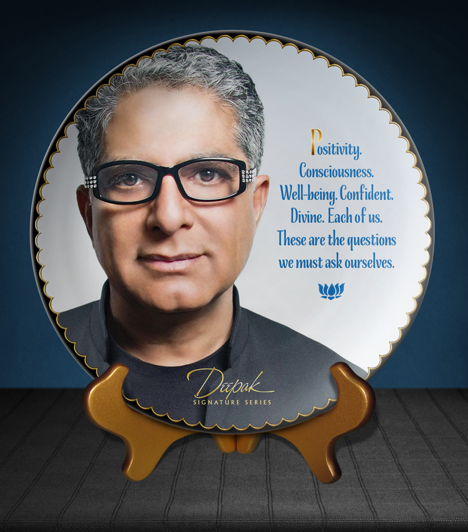

April 15, 2018
Deepak Chopra, M.D. on Five Pillars of Well-Being: Talks at GS
Watch youTube video- 1. Sleep: 6-8 hours a day
- 2. Meditate: 20 minutes of meditation = 1 hour of sleep
- 3. Exercise/movements: 30 minutes, 2-3 days a week minimum
- 4. Emotion: feel love, compassion, joy, equanimity
- 5. Nutrition foods: organic, famer market
a good night sleep, increase productivity at work
if you meditate 1 hour-twice a day, probably only need 5 hours of sleep
Meditation is the most effective stress release technique
Benefits of exercise are increasing focus and strengthen brain power
Yoga create mind body connection
The brain-changing benefits of exercise | Wendy Suzuki Eckhart Tolle - Stillness Meditation
Eckhart Tolle - Stillness Meditation